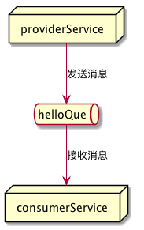

Spring Cloud 上手8-消息总线
文章目录
这是Spring Cloud上手系列的第八篇，代码放在GitHub上，随着本系列文章更新。
Spring Cloud Bus简介
Spring Cloud Bus以Spring Cloud Stream为基础，建立应用间的通讯通道。消息服务即可用于服务监控，也可以用作应用间的通讯和服务解耦。
将Spring Cloud Bus用于配置中心
在前一篇文章的最后一节，我们通过发送POST请求至应用的/refresh端点，可以让应用重新获取配置。如果我们要同时更新所有节点则需要逐个应用发送请求，这样管理起来并不方便。通过集成spring-cloud-starter-bus-amqp可以让我们通过配置中心应用统一管理各个应用配置信息的刷新。
集成之后的配置刷新机制如下图：

当访问配置中心的/bus/refresh时，它将通过总线发送广播消息。各个客户端接收到消息后，将重新读取配置信息。这样所有配置中心客户端就都能及时获取配置信息的变化。
安装消息中间件
Spring Cloud Bus支持RabbitMQ和Kafka两种服务。这里我们选择RabbitMQ。安装完毕后，默认的服务端口是5672，默认安装会安装管理控制台，管理控制台运行在15672端口。

集成消息总线
由于各个应用都有连接配置中心的需要，我们在根模块的build.gradle中添加库和依赖。
在ext.libs中添加bus`库：
|
|
添加依赖：
|
|
在配置中心和provider:service应用的配置文件中增加rabbitmq相关的配置信息。
|
|
编译并运行
在根模块中使用gradle build重新编译所有模块。之后运行注册中心、配置中心和provider:service应用。我们就能在provider:service应用的http://localhost:9010/provider/config查看到配置文件中的信息了。
修改配置文件，之后访问配置中心http://localhost:9002/bus/refresh，从控制台中可以看到provider:service重新读取了配置。
再次访问provider:service应用的http://localhost:9010/provider/config可以看到修改后的配置已经生效了。
整个刷新过程中，我们并没有访问provider:service的http://localhost:9010/refresh，通过访问配置中心的/bus/refresh就刷新了，provider:service所读取的配置。
自动触发配置更新
如果配置信息是存储在版本库中，还可以通过版本库的hook实现提交时自动发送请求至配置中心/bus/refresh，这样就能实现完全自动的化的配置重新加载。
如果只想更新部分服务的配置信息，可以发送请求至/bus/refresh时添加destination参数。如：/bus/refresh?destination=sc-provider:**，这样将刷新sc-provider的所有应用。如果只想刷新某个服务实例，还可以进一步使用/bus/refresh?destination=sc-provider:9010，只刷新sc-provider:9010这个实例。
总线事件跟踪
如果想了解总线上的事件是怎样传播的，只需要设置spring.bus.trace.enabled=true。在访问配置中心的/bus/refresh之后，访问配置中心的/trace端点就能看到如下结果：
|
|
从这些日志中可以看到配置中心发出的RefreshRemoteApplicationEvent事件被广播，配置中心客户端接受了这个事件，并重新读取了配置信息。
在总线上传递自定义消息
消息总线除了可以用于配置中心外，还可以处理我们自己的数据。下面我们测试从provider:service产生消息，在consumer:service中消费这条消息，使用的队列名称为hello。

在provider:service中配置消息生产者
添加Config配置类，在其中配置hello队列：
|
|
添加Sender类，由它负责发送消息:
|
|
在ProviderController中增加/provider/send端点，用于发送消息。
|
|
在consumer:service中配置消息消费者
添加消息接收类：
|
|
编译并运行程序
启动注册中心、配置中心、provider:service和consumer:service四个应用。
访问provider:service的/provider/send来发送消息。从控制台可以看到消息发出：
从consumer:service的控制台，可以看到消费方获取到的消息。
从RabbitMQ控制台也能看到hello队列的情况。

文章作者 Jamsa
上次更新 2018-06-11